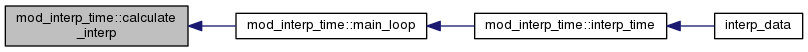
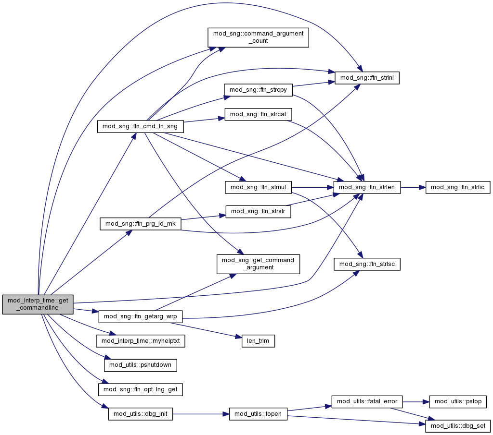
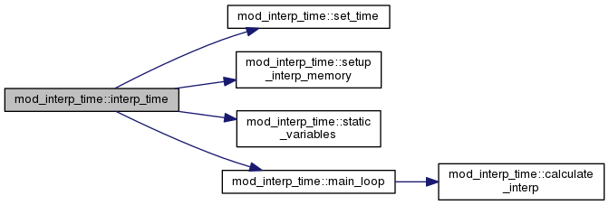
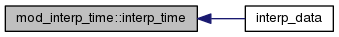
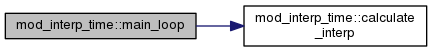
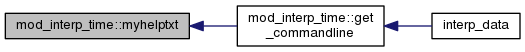
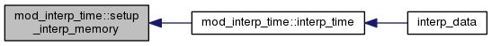
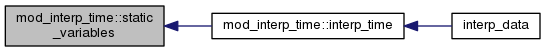

mod_interp_time Module Reference
Data Types | |
| type | varlist |
Functions/Subroutines | |
| subroutine | get_commandline (CVS_ID, CVS_Date, CVS_Name, CVS_Revision) |
| subroutine | myhelptxt |
| subroutine | interp_time |
| subroutine | set_time |
| subroutine | setup_interp_memory (LIST) |
| subroutine | main_loop |
| subroutine | static_variables (IN, OUT) |
| subroutine | calculate_interp (FTM, PREV, CURR, NEXT) |
Variables | |
| character(len=120) | fin |
| character(len=120) | fout |
| character(len=120) | timestep |
| type(ncfile), pointer | ncf_in |
| type(ncfile), pointer | ncf_out |
| type(varlist), dimension(:), allocatable | varslist |
Function/Subroutine Documentation
| subroutine mod_interp_time::calculate_interp | ( | type(ncftime), pointer | FTM, |
| type(ncvar), pointer | PREV, | ||
| type(ncvar), pointer | CURR, | ||
| type(ncvar), pointer | NEXT | ||
| ) |
Here is the caller graph for this function:

| subroutine mod_interp_time::get_commandline | ( | character(len=*), intent(in) | CVS_ID, |
| character(len=*), intent(in) | CVS_Date, | ||
| character(len=*), intent(in) | CVS_Name, | ||
| character(len=*), intent(in) | CVS_Revision | ||
| ) |
Here is the call graph for this function:

Here is the caller graph for this function:
| subroutine mod_interp_time::interp_time | ( | ) |
Here is the call graph for this function:

Here is the caller graph for this function:

| subroutine mod_interp_time::main_loop | ( | ) |
Here is the call graph for this function:

Here is the caller graph for this function:
| subroutine mod_interp_time::myhelptxt | ( | ) |
Here is the caller graph for this function:

| subroutine mod_interp_time::set_time | ( | ) |
Here is the caller graph for this function:
| subroutine mod_interp_time::setup_interp_memory | ( | type(ncfile), pointer | LIST | ) |
Here is the caller graph for this function:

| subroutine mod_interp_time::static_variables | ( | type(ncfile), pointer | IN, |
| type(ncfile), pointer | OUT | ||
| ) |
Here is the caller graph for this function:

Variable Documentation
| character(len=120) mod_interp_time::fin |
| character(len=120) mod_interp_time::fout |
| type(ncfile), pointer mod_interp_time::ncf_in |
| type(ncfile), pointer mod_interp_time::ncf_out |
| character(len=120) mod_interp_time::timestep |
| type(varlist), dimension(:), allocatable mod_interp_time::varslist |